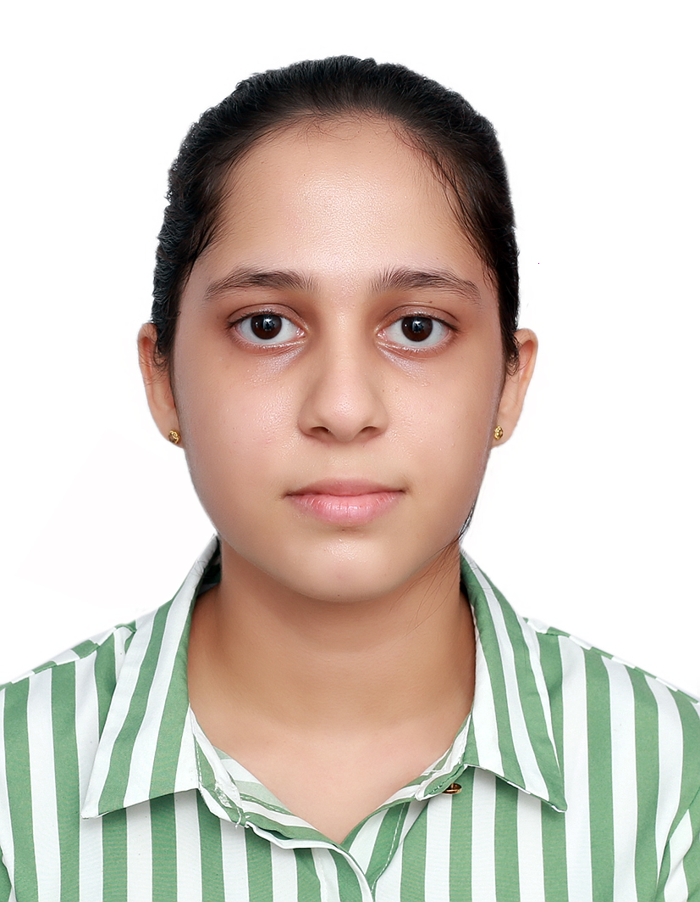

UNDERGRADUATE STUDIES
Sri Lanka Institute of Information Technology
BSc (Hons) Biotechnology
Currently exploring the world of biotechnology through academic learning and practical experiences.
2025 – 2029
WELCOME TO MY PORTFOLIO
BIOTECHNOLOGY UNDERGRADUATE
A curious mind with a love for science, a passion for learning, and a desire to discover how biotechnology can make a difference in the world.
Get to know me →
A LITTLE ABOUT ME
My background, interests, and the person I hope to become.
Biotechnology Undergraduate · SLIIT
I'm Nanduni Senaratne, a Biotechnology undergraduate at the Sri Lanka Institute of Information Technology (SLIIT). I enjoy learning new things, exploring scientific ideas, and discovering how the things we learn can be applied to real life.
I believe that university is about more than academics. It's also a place to build confidence, learn from others, take responsibility, and discover what we're capable of. Through my studies, projects, and leadership experiences, I'm working towards becoming a knowledgeable and responsible professional.
BSc (Hons) Biotechnology
SLIIT
Batch 13
MY ACADEMIC JOURNEY
Every stage of learning has helped shape who I am today.
UNDERGRADUATE STUDIES
Currently exploring the world of biotechnology through academic learning and practical experiences.
2025 – 2029
GCE ADVANCED LEVEL
Results: 2 C passes and 1 S pass
GCE ORDINARY LEVEL
Results: 8 A passes and 1 B pass
THINGS I'M LEARNING AND DEVELOPING
A mix of practical knowledge and personal strengths that I continue to build through experience.
Tools and knowledge that support my academic work.
Personal qualities I use when working with others.
SOME THINGS I'VE WORKED ON
A few academic projects that gave me opportunities to explore ideas, work in teams, and think differently.
01 / ACADEMIC PROJECT
Explored the development of a leather-like material using mycelium and organic waste as a more sustainable alternative to conventional materials. This project helped me understand the potential of biotechnology in developing environmentally friendly materials.
02 / ACADEMIC PROJECT
Worked on an academic assignment exploring gold biotechnology and the role of bioinformatics in scientific research. It introduced me to different biotechnology applications and their importance in modern scientific discovery.
03 / TEAM DEBATE
Participated in a debate about the possibility of bringing extinct species back to life. The experience involved considering scientific possibilities, animal welfare, ethical questions, and potential effects on ecosystems.
BEYOND MY STUDIES
Experiences that have taught me about responsibility, teamwork, and working towards something together.
Sinhala Debating and Oratory Society
LeadershipSLIIT Biotechnology — Batch 13
ResponsibilitySchool Sports Meet
TeamworkSchool Media Unit, Astronomy Society, and Science Society
ParticipationSchool extracurricular activity
CreativityWHAT MATTERS TO ME
A few things that guide the way I learn, work with people, and approach new challenges.
Staying curious, asking questions, and making the most of every opportunity to learn.
Exploring questions, understanding evidence, and remaining open to new ideas.
Listening to others, sharing ideas, and achieving more by working together.
Taking responsibility, supporting others, and helping a team move towards a common goal.
Looking at problems from different perspectives and finding new ways to approach them.
Learning from experiences, accepting challenges, and becoming more confident over time.
LET'S CONNECT
Have a question, an idea, or an opportunity to share? I'd be happy to hear from you.